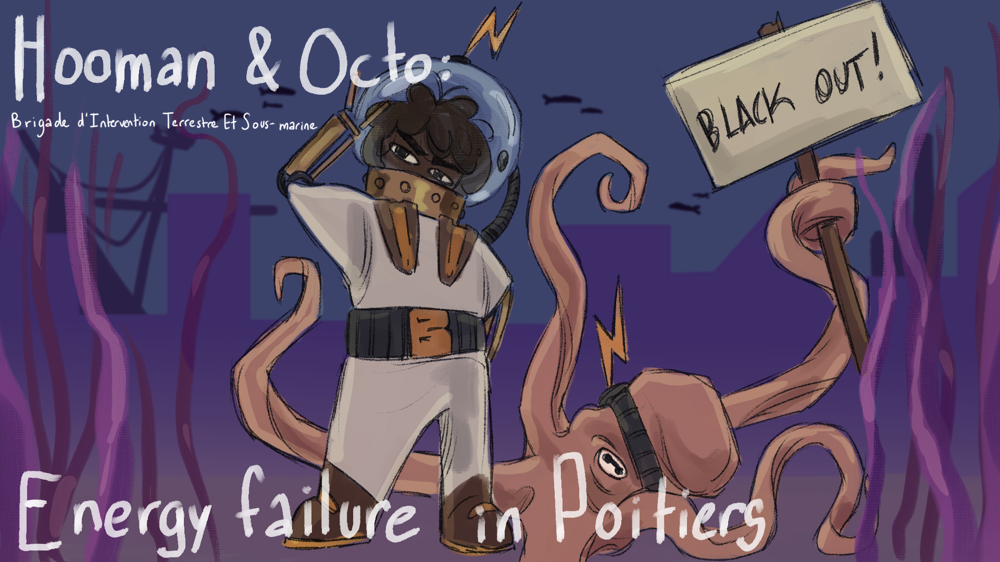
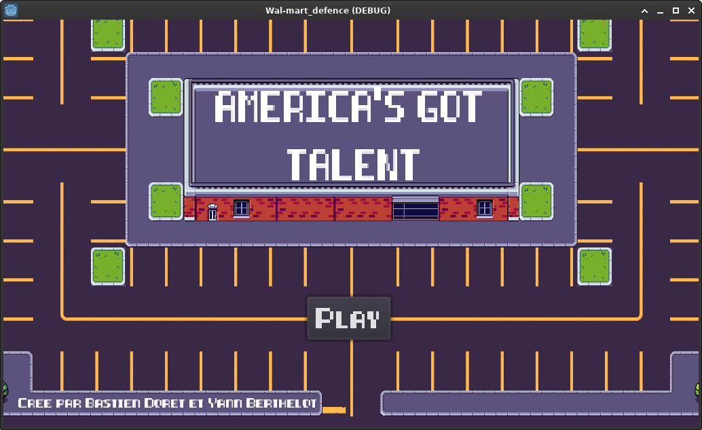

Bastien Doret
Hello and welcome to my Portfolio! I am a 22 years old student in Master 2 Computer Science in Poitiers who loves video games. So I decided that in my free time, I would create some. So I leave you with these creations, have a good time discovering them.
Mes jeux

Hooman & Octo : Energy Failure in Poitiers
Asymmetric platform game made for the GameJam au Palais
Link to the game

America's got talent
Tower-defence game made during the GameJam organised by the AEIF (Association des Etudiants en Informatique du Futuroscope)
Link to the game